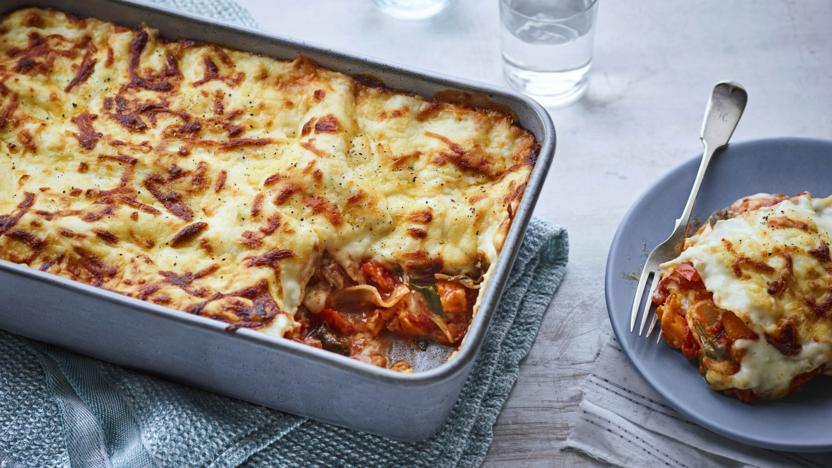

Roast vegetable lasagne
Description
Roast vegetables bursting out of a rich lasagne

Ingredients
- aubergine
- courgette
- chopped tomatoes
- garlic
- sweet peppers
- milk
- butter
- cheese
- lasagne sheets
- nutmeg
- plain flour
- Roast the veg, the peppers whole, the aubergine and courgette sliced.
- Melt butter, add plain flour to make a roux with the milk.
- Melt in grated cheese and add nutmeg.
- Fry garlic quickly, then add tomatoes, cook down, then add the roast veg, the peppers stripped of their skins and chopped. Add oregano.
- Layer up tomato veg mix, then lasagne sheet, then cheese sauce. Repeat and top with a lasagne sheet with a little sauce and extra cheese on top.
Bake in oven at 180oC for about 35 minutes, until nicely coloured on top.
Serve with salad and garlic bread.